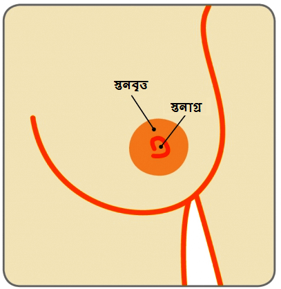

স্তন

স্তনের স্বাস্থ্য় সংক্রান্ত অ-বিপজ্জনক সমস্য়াগুলি
স্তনের সিস্ট
প্রীতই (নাম পরিবর্তিত) একজন 40 বছর বয়সী মহিলা, যিনি একদিন হঠাত সকালে ঘুম থেকে উঠে তার বাম স্তনে একটি মাংসপিন্ড লক্ষ্য় করেন।.
স্তন
স্তনবৃন্ত

একটি স্তনের সিস্ট কি?
স্তনগুলি লোবিউলগুলি (দুধ-প্রস্তুতকারী গ্রন্থি) এবং ডাক্ট বা নালী (যে টিউবগুলি স্তনবৃন্তে দুধ পরিবহন করে) দিয়ে তৈরী হয়, যা চর্বিযুক্ত পেশীকলা ও সাপোর্টকারী পেশীকলা দিয়ে ঘেরা থাকে। কখনও কখনও স্তনে তরল-পূর্ণ থলের মত তৈরী হয়। এগুলিকে বলে স্তনের সিস্ট। এটি স্তনের সবচেয়ে পরিচিত অ-বিপজ্জনক (ক্য়ান্সার সৃষ্টিকারী নয়) মাংসপিন্ডগুলির একটি।
এটি কিভাবে হয় এবং কোন বয়সে এটি বেশী দেখা যায়?
মনে করা হয় যে, স্তন পরিণতি পাওয়া এবং পরিবর্তিত হওয়ার সাথে স্বাভাবিকভাবে এগুলি তৈরী হয়ে থাকে। যদিও যে কোন বয়সে স্তনের সিস্ট হতে পারে, তবে 35 বছরের বেশী বয়সী মেনোপজ বা রজ: নিবৃত্তি না হওয়া মহিলাদের ক্ষেত্রে এটি বেশী দেখা যায়। মহিলারা মেনোপজ বা রজ:নিবৃত্তির কাছাকাছি সময়ে গেলে এগুলি বারবার হয়ে থাকে এবং তারপরে সেগুলি সাধারণত: থেমে যায় বা ততটা ঘন ঘন হয় না। তবে, যেসব মহিলারা মেনোপজের পর হরমোন রিপ্লেসমেন্ট থেরাপি(এছঝ) নিয়ে থাকেন, তাদের ক্ষেত্রেও স্তনে সিস্ট তৈরী হতে পারে।.
সিস্টগুলি যদি ত্বকের তলের কাছাকাছি থাকে, সেগুলি নরম মনে হতে পারে বা যদি তা স্তনের পেশীকলার গভীর থাকে সেগুলি শক্ত মাংসপিন্ডের মত অনুভূত হয়। সেগুলি স্তনের যে কোন জায়গায় তৈরী হতে পারে, তবে স্তনের উপরের অর্ধে এটি বেশী দেখা যায়। কিছু মহিলার কাছে সিস্টগুলি অস্বস্তিজনক মনে হতে পারে এবং এমনকি ব্য়থাও হতে পারে এবং পিরিয়ডের আগে সিস্টগুলি আকারে বড় উঠতে পারে এবং তাতে ব্য়থা ও নরম মনে হতে পারে। .
একটি বা উভয় স্তনে – এক বা একাধিক সিস্ট তৈরী হওয়া খুবই পরিচিত ব্য়াপার – এবং এতে দু:শচিন্তার কোন কারণ নেই। এছাড়াও অনেক মহিলা বুঝতেই পারেন না যে, তাদের সিস্টগুলি রয়েছে। .
সেগুলিকে কিভাবে চিন্হিত করা যায়?
সাধারণভাবে, একজন মহিলা সকালে ঘুম থেকে উঠে মাংসপিন্ড লক্ষ্য় করতে পারেন। সিস্টগুলি সাধারণভাবে একটি মাংসপিন্ড হিসেবে নজরে আসে বা স্তনের একটি পরীক্ষা বা স্তনের রুটিন নির্ণায়ক পরীক্ষাকালে কখনও কহনও আকস্মিকভাবে সেগুলি চিন্হিত হয়ে থাকে। .
একজন স্পেশালিস্টের পরামর্শ নেওয়া অবশ্য়প্রয়োজনীয় এবং তিনটি আলাদা পরীক্ষা করানো খুব গুরুত্বপূর্ণ, যেগুলিকে প্রায়শ: ট্রিপল অ্যাসেসমেন্ট বা ত্রীমূখী পরীক্ষা বলে, যাতে একটি নির্দিষ্ট রোগনির্ণয় করা যায়। .
ট্রিপল অ্যাসেসমেন্ট বা ত্রীমূখী পরীক্ষা – স্তনের ক্লিনিকাল পরীক্ষা, একটি ম্য়ামোগ্রাম (স্তনের এক্স-রে) এবং আল্ট্রাসাউন্ড স্ক্য়ান (যা উচ্চ-ফ্রিকোয়েন্সীর শব্দ তরন্গ ব্য়বহার করে স্তনের একটি প্রতিচিত্র তৈরী করে)। তরলটি পরীক্ষার জন্য় ল্য়াবোরেটরীতে পাঠানো হতে পারে, বিশেষ করে, যদি তাতে রক্তের চিন্হ হতে পারে।.


একটি সিস্টকে কি সবসময় অ-বিপজ্জনক (মারাত্মক নয়) বলে বিবেচনা করা হয়?
বেশীর ভাগ সিস্টই অ-বিপজ্জনক (ক্য়ান্সার সৃষ্টিকারী নয়) হয়ে থাকে এবং এর জন্য় স্তনের ক্য়ান্সার হওয়ার কোন অতিরিক্ত ঝু৺কি থাকে না। তবে, খুব বিরল ক্ষেত্রে, কিছু সিস্ট থেকে একটি ক্য়ান্সার (ইন্ট্রাসিস্টিক ক্য়ান্সার) প্রারম্ভ হতে পারে। সিস্ট থেকে রক্তের চিন্হযুক্ত তরল নি:সরিত হলে, সেটিকে সতর্কভাবে পরীক্ষা করা উচিত, যাতে নিশ্চিত হওয়া যায় যে, তাতে খারাপ কিছু নেই।
কিভাবে স্তনের সিস্টের ব্য়বস্থাপনা করা হয়?
যদি ট্রিপল অ্যাসেসমেন্ট বা ত্রীমূখী পরীক্ষাতে একটি সাধারণ সিস্টের উপস্থিতি নিশ্চিত হয়, সেক্ষেত্রে মহিলাটি আশ্বস্ত হতে পারেন যে, মাংসপিন্ডটি ক্য়ান্সার নয় এবং তা ক্য়ান্সারের দিকে যাবে না। অনেক সিস্ট নিজে থেকেই চলে যায় এবং তা নিয়ে দু:শ্চিন্তার কিছু নেই। অধিকাংশ স্তনের সিস্ট থেকে কোন নি:সরণ হয় না। সিস্ট অপসারণ করার জন্য় অস্ত্রোপ্রচার করার কোন প্রয়োজন নেই। .
যদি সিস্টটি আকারে বড় হয় এবং তাতে অস্বস্তি হয়, সেক্ষেত্রে একটি সূক্ষ্ম সূ৺চ ও সিরিন্জ ব্য়বহার করে, আল্ট্রাসাউন্ড নির্দেশনা নিয়ে বা তা ছাড়া তরলটি বের করে দেওয়া যেতে পারে।.
তরল বের করে দেওয়ার পর, সিস্টটি সাধারণত: চলে যায়। সিস্ট থেকে নি:সরণ হওয়া তরল দেখতে স্পষ্ট থেকে ঘন বিভিন্ন রকমের হতে পারে। .
যদি স্তনের আল্ট্রাসাউন্ড পরীক্ষাতে একটি ইন্ট্রাসিস্টিক বৃদ্ধি দেখা যায়, সেক্ষেত্রে সিস্টের তরল অবশ্য়ই বের করে দিতে হবে এবং ইন্ট্রাসিস্টিক ক্য়ান্সারের উপস্থিতির সম্ভাবনা বাতিল করার জন্য় ইন্ট্রাসিস্টিক বৃদ্ধির একটি সূ৺চীভেদী বায়্প্সি করানো সহ সাইটোলজির জন্য় পাঠাতে হবে।.
তবে, এটি মনে রাখতে হবে যে, ইন্ট্রাসিস্টিক ক্য়ান্সার খুবই বিরল এবং সিস্ট থাকা অধিকাংশ মহিলাদেরকে শুধুমাত্র আশ্বস্ত হতে হবে। .
সিস্ট থেকে তরল বের করে দেওয়ার পর তা কি আবার ফিরে আসতে পারে?
সিস্ট ফিরে আসতে পারে বা কারো নতুন সিস্টগুলি তৈরী হতে পারে। এটিকে একটি বারবার ফিরে আসা সিস্ট হিসেবে না ধরে নেওয়া গুরুত্বপূর্ণ। পরীক্ষা ও নিশ্চিতকরণের জন্য় একজন স্পেশালিস্টের সাথে আলোচনা করা অবশ্য়প্রয়োজনীয়। সিস্টগুলির চিকিত্সা সবসময় একই হয়।.
সিস্ট ধরা পড়ার পর কি ফলো আপ করার প্রয়োজন রয়েছে?
যদি সিস্টটি থেকে তরল বের করে দেওয়া হয়, সেক্ষেত্রে কয়েক সপ্তাহ পরে স্পেশালিস্টকে সেই মহিলাটি পরীক্ষা করে দেখতে হবে যে তা আবার পূরণকৃত হয়েছে কি না। ফলো-আপ সাক্ষাতে স্তনের একটি আল্ট্রাসাউন্ড স্ক্য়ান করা উচিত।.